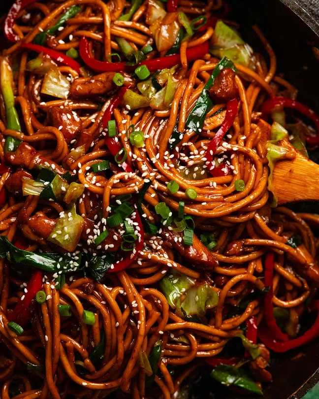

Hokkien Noodles

Description
Hokkien noodles is a dry noodle dish that is stir fried with a special sauce.
It is a great, simple and quick dish to make, as any vegetables and meat of
your liking can be added.
Ingredients
- 500g/ 1 lb hokkien noodles, (fridge best)
- 350g/ 12 oz chicken thighs (boneless, skinless), cut into lot of
thin 0.5 x 3cm / 0.2 x 1.2"
- 2 tbsp canola oil (or vegetable, cottonseed, peanut oil)
- 2 garlic cloves, finely minced
- 8 green onion stems, cut into 5cm / 2″ lengths, white part
separated from green part
- 1 red capsicum (bell peppers), cut into thin 0.5cm / 0.2″
strips
- 3 heaped cups green cabbage, cut into thin 1 x 5cm / 0.5 x 2"
strips
- Sauce:
- 2 tbsp light soy sauce
- 1 1/2 tbsp dark soy sauce
- 2 tbsp oyster sauce
- 1 tbsp Mirin or Chinese cooking wine
- 1 tbsp sesame oil, toasted
- 1/8 tsp white pepper
- Optional Garnishes:
- White sesame seeds
- Finely sliced green onion
Steps
- Sauce – Mix the sauce in a small bowl.
- Briefly marinate chicken – Toss the chicken with 1
1/2 tbsp of the Sauce. Marinate for 10 minutes while you prepare the
noodles and vegetables.
- Rinse noodles – Prepare the noodles per the packet
directions (soak in boiling water or briefly boil). Drain in a colander
then rinse briefly under tap water
- Sear chicken – Heat the oil in a large non-stick
pan over high heat until very hot (mine is 30cm/12", Note 9 re:
wok). Add the chicken and toss for 1 minute. Add the garlic and
white part of the green onion, then toss for another 1 minute or
until the surface of the chicken is sealed (but still a bit raw
inside)
- Cook veg & noodles – Add the capsicum and cabbage.
Toss for 2 minutes until the cabbage is mostly wilted. Add the green
part of the green onions, noodles and sauce. Toss for 1 1/2 to 2
minutes until the noodles are stained a lovely mahogany colour.
- Serve immediately, sprinkled with sesame seeds and
green onion if desired!